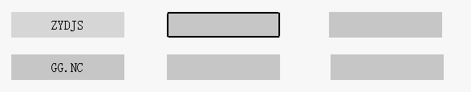
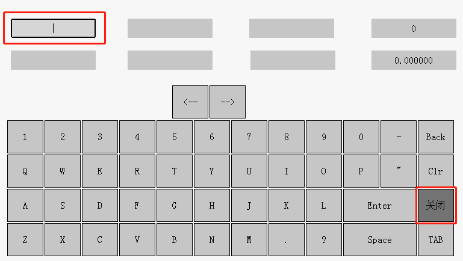

|
类型 |
虚拟按键指令 |
|
描述 |
开启/关闭虚拟键输入模式，开启虚拟键输入模式后，值显示、字符显示控件将会获得焦点（同一时刻有且只有一个控件获取焦点），获得焦点的控件可以直接接收虚拟键值，且获得高亮提示（如下第一行第二个控件）  |
|
语法 |
VKEY_MODE (mode[, winid]) mode = VKEY_MODE() mode：0 - 关闭虚拟键输入模式 1- 开启虚拟键输入模式1，可编辑控件有效； 点击切换焦点，若当前处于焦点状态，再点击弹出键盘 2- 开启虚拟键输入模式2，可编辑控件有效，屏蔽弹出键盘 3- 开启虚拟键输入模式 3，可编辑控件有效 通过TAB键切换焦点，首次按下ENTER键后才能进入编辑状态(未进入编辑状态不可输入，进入编辑状态后显示输入光标)，再次按ENTER则确认编辑并切换下一个控件 4- 开启虚拟键输入模式4，可编辑控件有效 跟模式3一样，不同的是模式4进入编辑状态会默认清空原来的数据 winid：指定窗口号，缺省为当前（顶层）窗口 注：窗口号缺省时，会自动扫描最顶层窗口并切换当前焦点，只能在当前最顶层窗口上使用输入焦点功能，无法在其他窗口上使用。 |
|
适用控制器 |
支持RTHmi |
|
例子 |
VKEY_MODE(1) '开启虚拟键输入模式
VKEY_MODE(1, 10) '指定窗口10开启虚拟键输入模式  |
|
相关指令 |